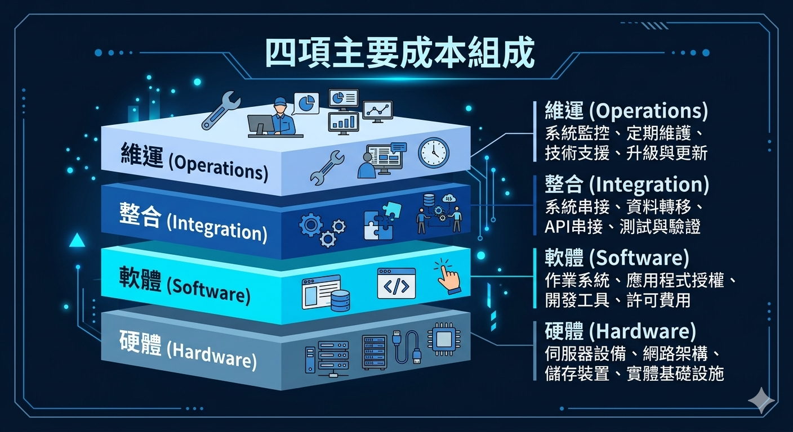
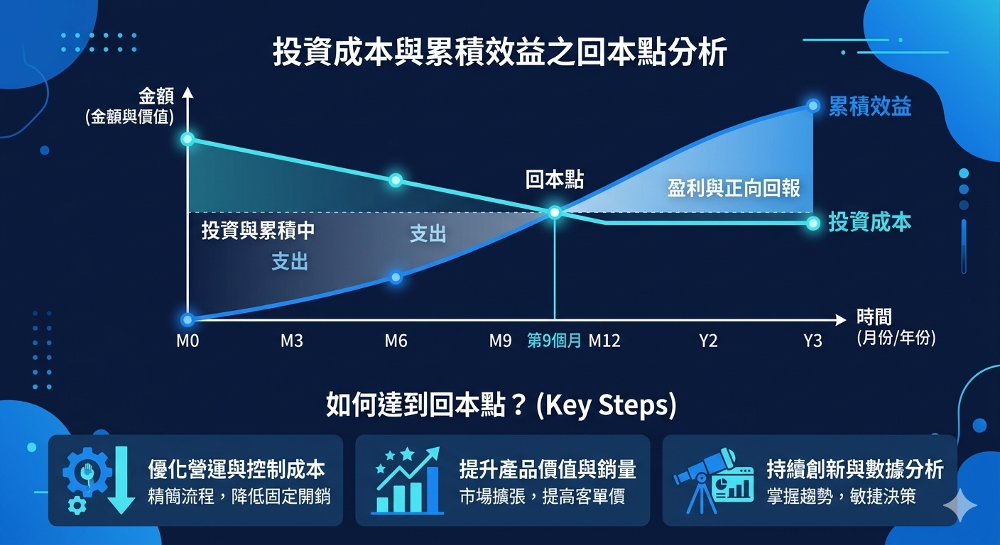

決策前,先把帳算清楚
「導入機器視覺要花多少錢?多久能回本?」這是每個要拍板的主管都會問的問題。設備報價只是表面,真正該看的是整體投入與它帶來的效益,也就是投資報酬率(ROI)。把帳算清楚,才能把導入從「一筆支出」變成「一項划算的投資」。
這篇文章拆解機器視覺導入的成本組成、常被忽略的隱藏成本,以及一套可以自己套用的 ROI 計算方式。
導入成本有哪些
機器視覺的導入成本不只買相機。完整的投入通常包含四大塊:
- 硬體:相機、鏡頭、光源、控制器、機構治具。
- 軟體:視覺軟體授權、演算法開發或模型訓練費用。
- 整合:與 PLC、MES、產線設備串接的工程費與工時。
- 維運:上線後的維護、模型更新、教育訓練與備品。

別忽略隱藏成本
報價單上看得到的是硬體與軟體,但真正讓專案超支的,常常是這些隱藏成本:
- 導入停機:安裝與調機期間的產線停擺損失。
- 樣本準備:蒐集與標註訓練樣本的人力與時間。
- 學習曲線:操作人員上手前的效率折損。
- 後續維護:產品換版、製程調整時的重新調校。
隱藏成本不是要嚇退你,而是提醒導入前要把這些一併估進去。低估隱藏成本,是 ROI 算得漂亮、實際卻不如預期的主因。
效益從哪裡來
ROI 的另一半是效益。機器視覺帶來的效益通常來自幾個方向:
- 人力節省:取代或減少人工檢測、揀貨、掃碼的人力。
- 良率提升:及早攔截不良,降低報廢與重工成本。
- 客訴與召回減少:漏檢下降,降低賠償與商譽損失。
- 產能提升:檢測速度加快,單位時間產出增加。
如何計算 ROI
最基本的投資報酬率公式是:
ROI =（年度效益 − 年度成本）÷ 導入總成本 × 100%
另一個更直覺的指標是「回收期」,也就是多久能把導入成本賺回來:
回收期（月）= 導入總成本 ÷ 每月淨效益

舉個簡化的例子:假設一條產線導入視覺檢測,總成本 200 萬元,取代 2 名檢測人力、每年省下人力與報廢成本共 120 萬元,扣除每年維運成本 20 萬元,則每年淨效益為 100 萬元。
- ROI =（100 萬 ÷ 200 萬）× 100% = 50%
- 回收期 = 200 萬 ÷（100 萬 ÷ 12）≈ 24 個月
也就是約兩年回本,之後每年淨賺 100 萬元。實際數字會因產線而異,但這套算法能幫你快速判斷值不值得投。
怎麼讓 ROI 更好看
同樣的導入,做對幾件事能明顯縮短回收期:
- 選對場景:優先導入人力密集、漏檢成本高的環節,效益最直接。
- 樣品測試先行:先驗證可行性,避免買了做不到的白花錢。
- 分階段導入:先做一條線試點,驗證 ROI 再複製擴大。
- 重視資料回收:模型越用越準,誤判下降,長期效益持續累積。
結語
機器視覺不該只看設備報價,而要看整體投入與長期效益。把硬體、軟體、整合、維運與隱藏成本都算進去,再對照人力、良率、產能的效益,用 ROI 與回收期兩個指標,就能做出理性的決策。
如果你想評估自己產線導入視覺的成本與回本時間,歡迎與我們聯絡,我們可以協助你從場景評估到 ROI 試算,把帳算清楚再動手。